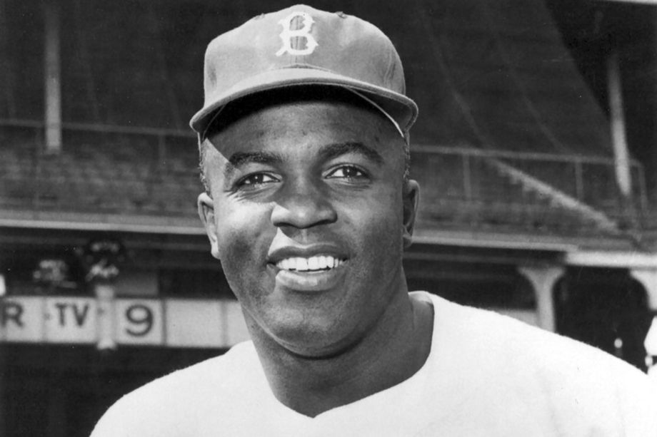

Jackie Robinson

Jackie Robinson was an average _ superstar baseball player.
On January 31, 1919, Jack Roosevelt “Jackie” Robinson was born into a family of sharecroppers on a plantation in Cairo, Georgia. Twenty-eight years later, he cemented his place in history when he broke the color barrier and became the first African American to compete in Major League Baseball in the modern era. Robinson would go on to win the MLB’s 1947 Rookie of the Year award before embarking on an illustrious career as a ball player, television analyst, businessman and civil rights leader.
Facts You Didn't Know
- Jackie played for the Negro leagues, the Minor League as well as the Major Leagues. He is one of the few players to accomplish this achievement.
-
Robinson didn’t play baseball between age 21 and 26.
- Occupied by his pro football career and his military service, he played no organized baseball between his last UCLA game in 1940 and his first game for the Kansas City Monarchs in 1945.
- Robinson played in 6 consecutive All-Star games – 1949 to 1954.
- Robinson’s older brother was a silver medalist at the Olympics.
- Jackie Robinson was inducted into the National Baseball Hall of Fame and Museum in 1962.
- The National Baseball Hall of Fame address: 25 Main St, Cooperstown, NY.
MLB Stats
| Career Batting Average |
Home Runs |
| .311 |
137 |